Сфера.Согласования
Единый хаб, унифицирующий процессы утверждения документов, знаний, задач и заявок.
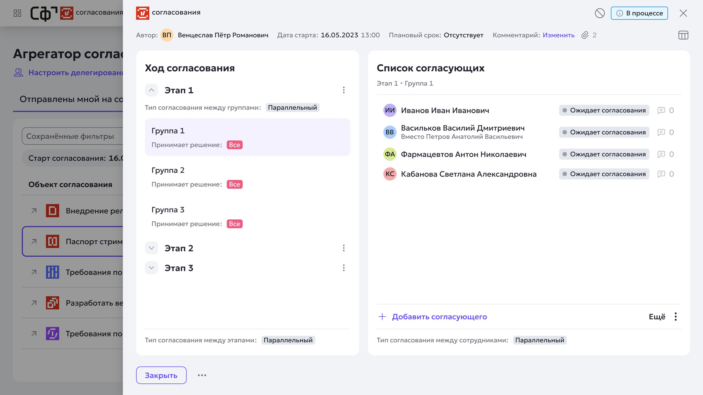
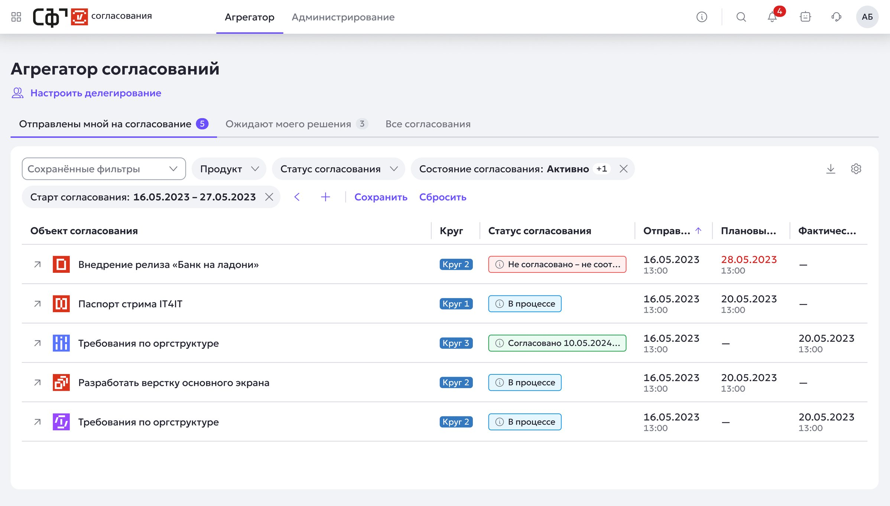
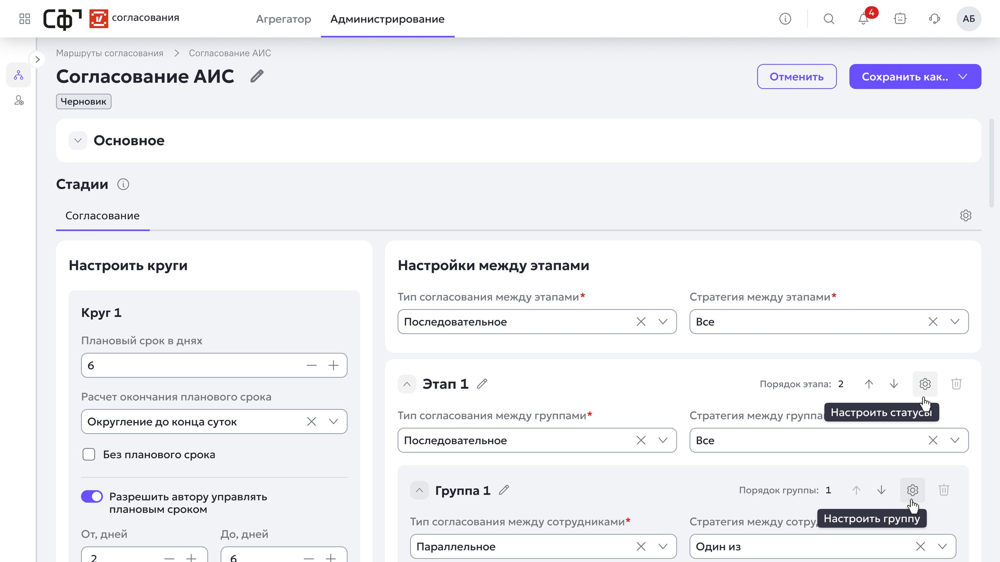
Задачи:
Банку был необходим отечественный инструмент для унификации согласований в различных производственных процессах. К моему приходу на роль дизайн-лида был проработан MVP, продукт стабильно развивался, но существовало несколько проблем:
- На продукте часто менялись дизайнеры, из-за этого были нарушены процессы разработки дизайна и авторского контроля;
- Из-за отсутствия корректного авторского контроля в прод просачивались решения, отличающиеся от разработанного дизайна;
- Отсутствовала практика исследований и проверки разрабатываемых решений на пользователях.
Кейс #1
Уменьшили долю просроченных согласований на 70%
Мы провели анализ пользовательских сессий, 15 глубинных интервью и опрос 50 активных участников согласований, которые показали ряд проблем старого интерфейса:
- Неизвестный источник: задачи из wiki и документов выглядели одинаково — невозможно было понять, где открывать материал и какие правила согласования действуют.
- Плановые vs фактические сроки: в карточке отображались только плановые даты, но реальные задержки не подсвечивались. Пользователи не видели, что процесс уже идёт с опозданием.
- Циклические процессы: в методологии согласования некоторых артефактов были заложены круги. Агрегатор не отражал эту логику, и участники теряли понимание, на каком этапе они находятся.
- Слабая фильтрация: нельзя было отфильтровать задачи по проекту, типу документа или инициатору.
- Путаница между исходящими и входящими: интерфейс не различал задачи, которые пользователь сам отправил на согласование, и те, которые пришли ему. Люди пропускали важные запросы, думая, что это их собственные поручения.

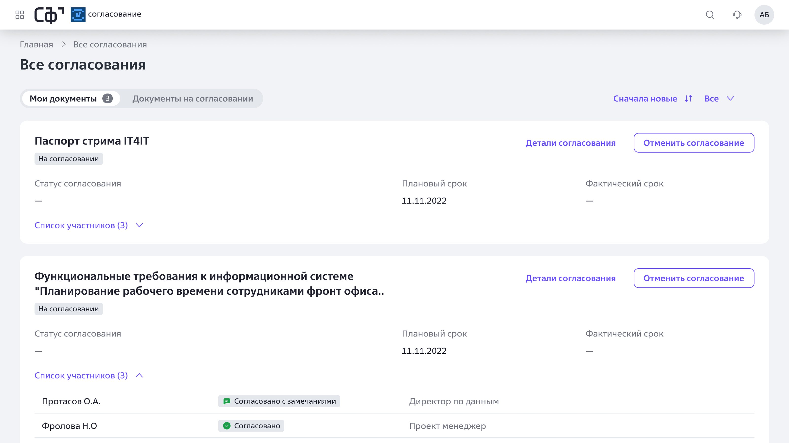
Посмотреть как было← до редизайна
Мы провели редизайн агрегатора согласований: добавили метки источника задач, отображение фактических сроков, визуализацию кругов, разделили входящие и исходящие задачи.
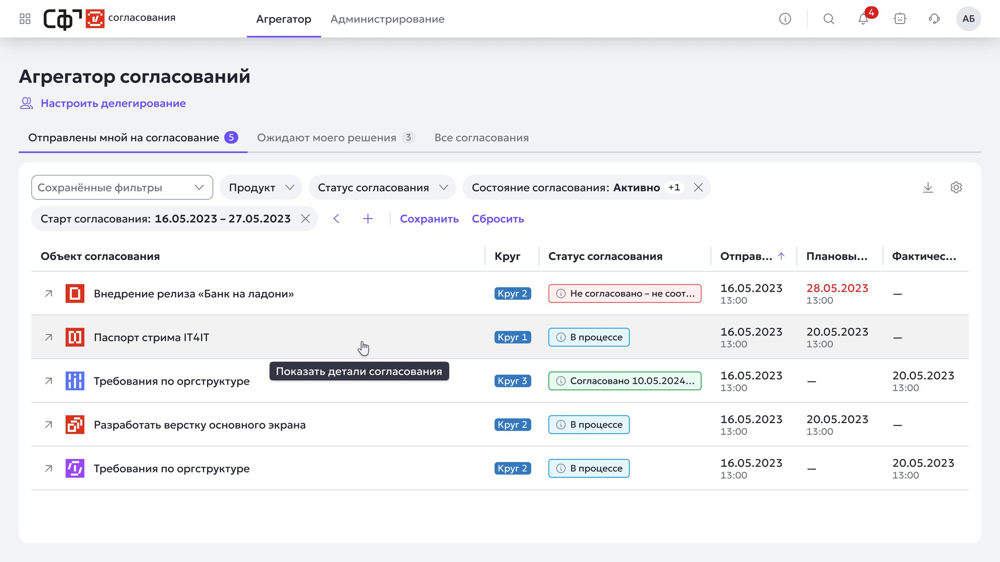
В результате доля просроченных согласований упала с 40% до 12%, время обработки согласования сократилось на 36%, а CSAT вырос с 51% до 66%.
Кейс #2
Спроектировали новый экран согласования, полностью переработав структуру, визуальную иерархию и добавив недостающие элементы.
Экран согласования — место, где участники принимают решение, а автор следит за ходом процесса. По обратной связи и записям пользовательских сессий мы увидели, что люди подолгу ищут на нём главное: на каком этапе согласование, кто сейчас должен принять решение и что от них ждут. Чтобы разобраться в причинах, мы провели серию интервью с авторами и согласующими и юзабилити-тестирование старого экрана.
Выявили ключевые боли пользователей:
- Информационный перекос — шапка с идентификационными данными (номер, автор, дата создания) занимала половину первого экрана, хотя нужна была только один раз за весь цикл. Полезная информация (ход, этапы, ответственные) оказывалась ниже «сгиба».
- Ход согласования нечитаем — прогресс был представлен абстрактно, перемешан с визуализацией циклических процессов.
- Ответственные скрыты — список согласующих и их зоны ответственности задавались при создании, но на экране не отображались. Пользователи не видели, кто за что отвечает, и были вынуждены переходить в настройки или писать в чат.
- Нет обсуждений — нельзя было задать вопрос по конкретному этапу или согласующему. Люди уходили в мессенджеры, теряя контекст и создавая информационный хаос.
- Визуальный шум — отсутствие чёткой иерархии, перегруженность элементами, слабая типографика.

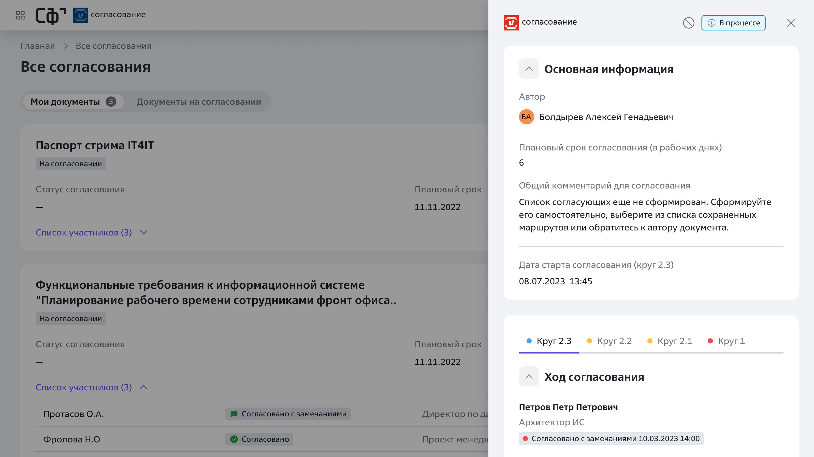
Посмотреть как было← до редизайна
Мы провели глубокий редизайн экрана согласования: убрали информационный шум, сделали прозрачным ход и список ответственных, добавили комментарии. В результате время понимания статуса сократилось, а CSAT вырос с 34% до 45%.
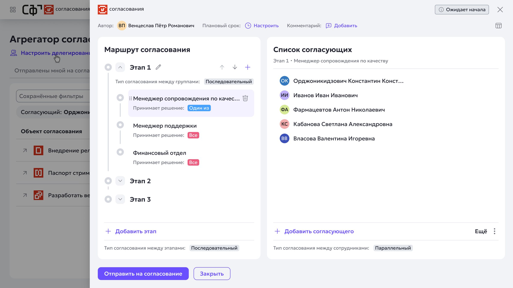
Внутренние опросы показали, что 88% пользователей считают новый экран «понятным и удобным».
Кейс #3
Снизили просрочки из-за отсутствия сотрудников с помощью добавления функции делегирования
Мы проанализировали метрики за полгода и провели опрос 50 активных пользователей и заметили повторяющуюся проблему: когда ключевой сотрудник уходил в отпуск или на больничный, связанные с ним согласования зависали. Процессы останавливались, сроки срывались, а администраторам приходилось вручную переназначать задачи.
Выявили ключевые боли:
- Отсутствие механизма автоматической передачи задач на период отпуска.
- Сложность настройки заместителей под разные роли и продукты (например, в одном продукте заместитель один, в другом — другой).
- После возвращения из отпуска задачи, которые заместитель не успел решить, терялись или продолжали висеть на заместителе.
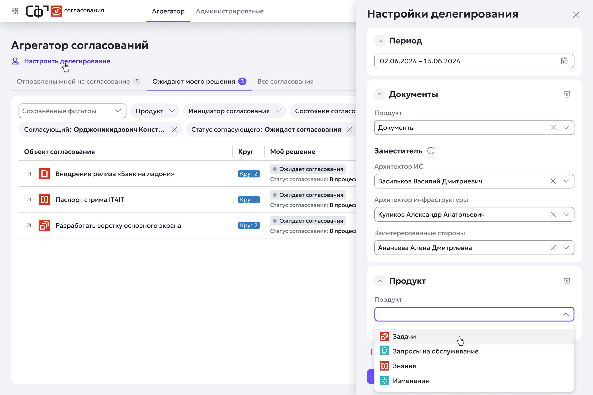
В результате доля просрочек из-за отсутствия сотрудников снизилась на 68%, время на ручное переназначение сократилось на 83%.
72% пользователей активно используют делегирование, экономя компании десятки часов в год.
Итоги работы в роли дизайн-лида:
Проведено глобальное ревью продукта с целью выявления проблем реализации и юзабилити:
- Под задачи продукта нанял и адаптировал нового дизайнера.
- Проработал верхнеуровневую архитектуру с базовой функциональностью для различных ролей пользователя:
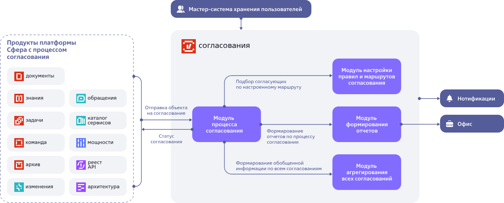
- Выявил список проблем в реализации, определил дизайн-долг. За год свёл его к минимуму.
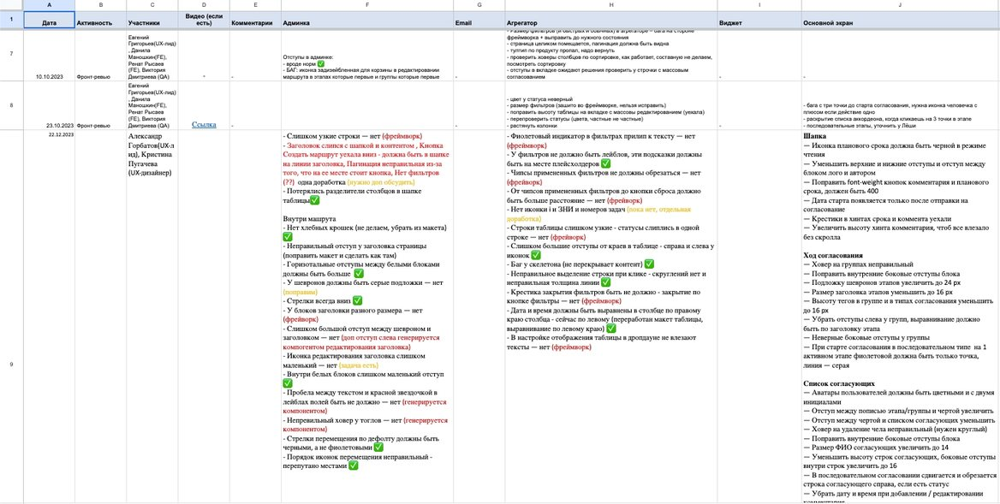
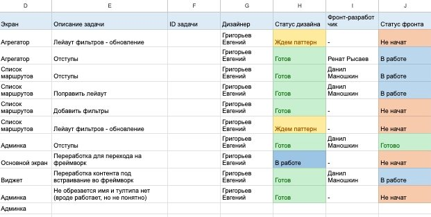
- Ввёл практику регулярных пользовательских исследований при разработке нового или доработках старого функционала:
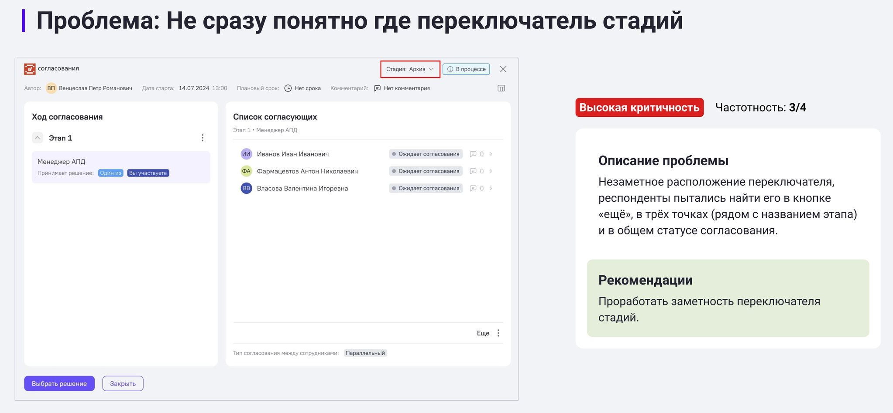
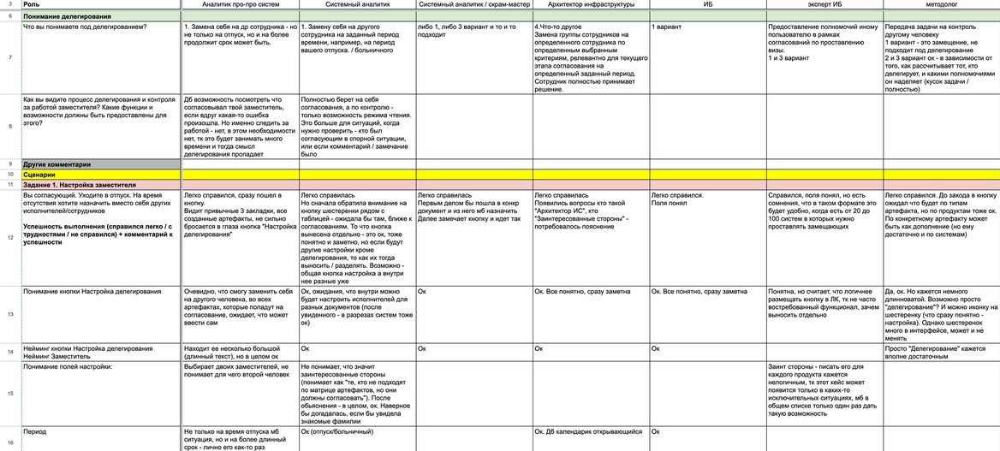
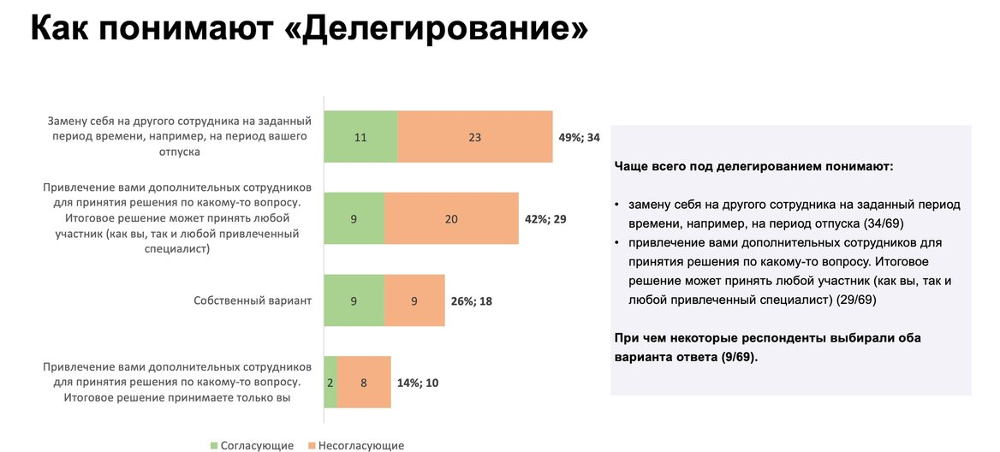
Привели в порядок админку:
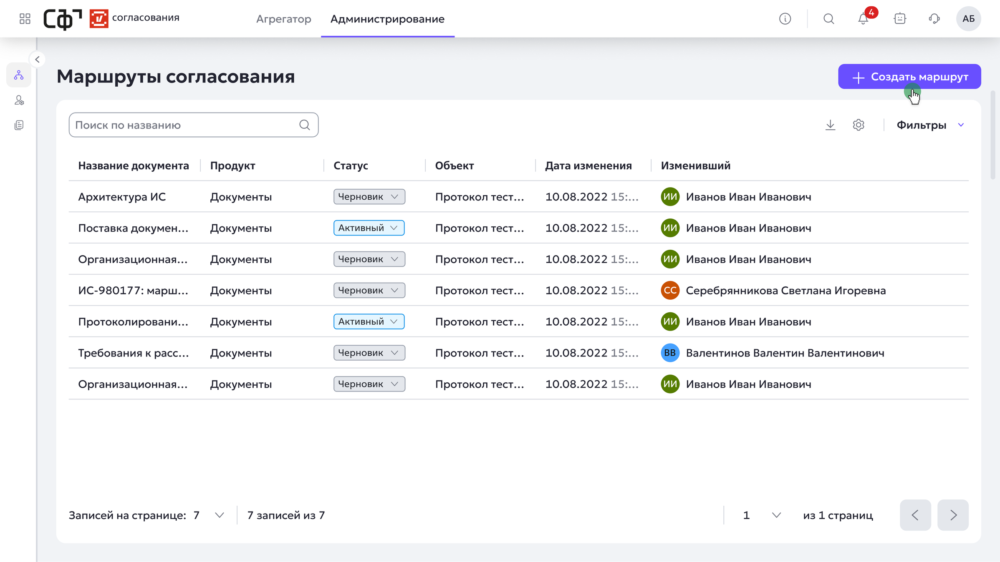
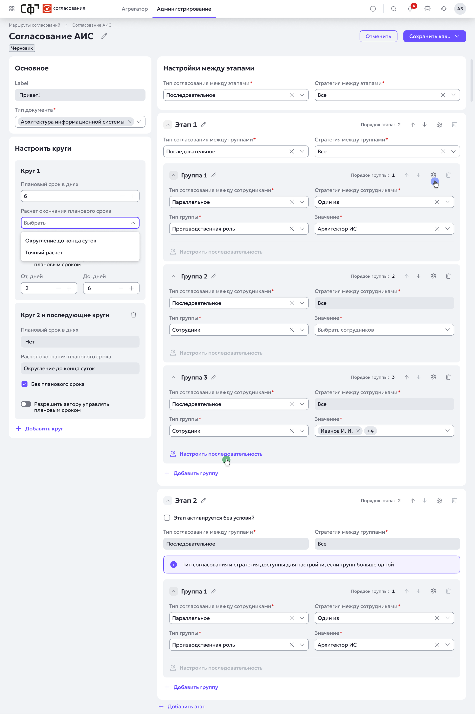
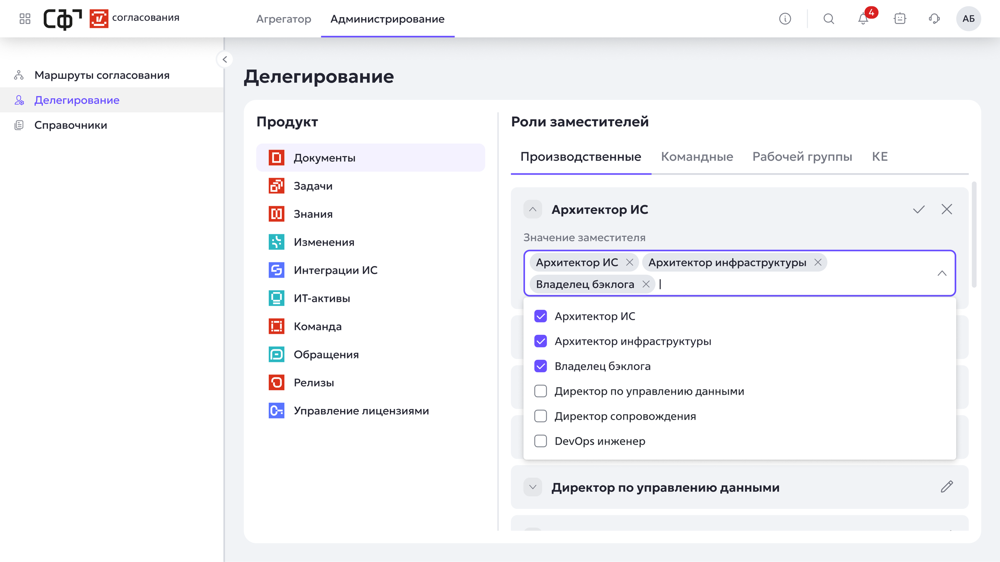
Общие метрики удовлетворённости пользователей стабильно растут:
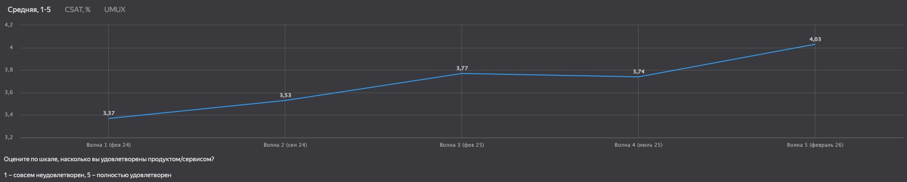
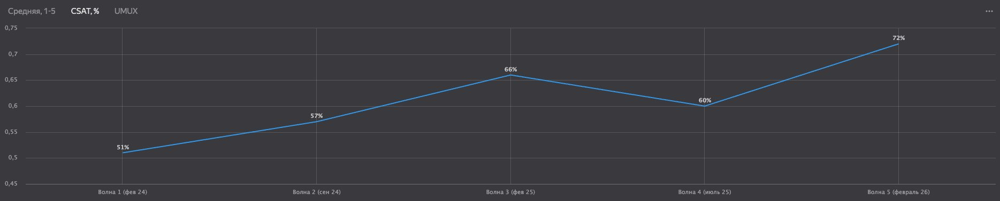
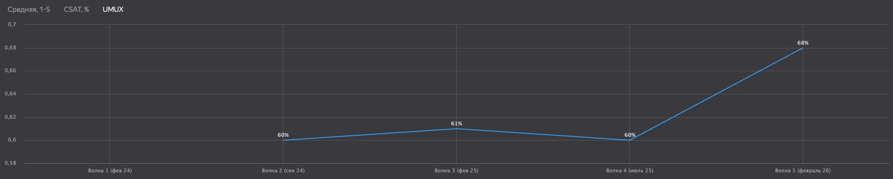

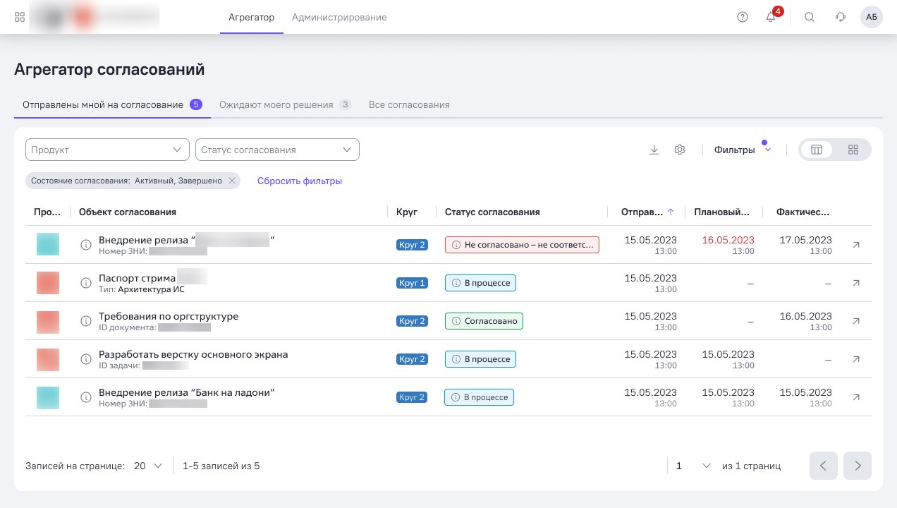